Doenças orais:etiologia, fatores de riscoe estratégias de prevenção
Orientação ao público leigo
Rafael Guerra
Bernardo Maia
Miguel Carvalho
Phelipe Fernandes
Maria Eduarda Schoralick
Grupo 2 · Interações Biológicas · Orientador: Prof. Sebastião Magno
Grupo 2 · 1
Setas ‹ › ou teclado para passar · F11 tela cheia
Rafael Guerra
Por que orientar o público leigo?
Quase tudo se evitaQuem evita é a pessoa, em casaSaber o sinal de alertaEtiologia = causaFator de risco = aumenta a chancePrevenção = evitar ou achar cedo
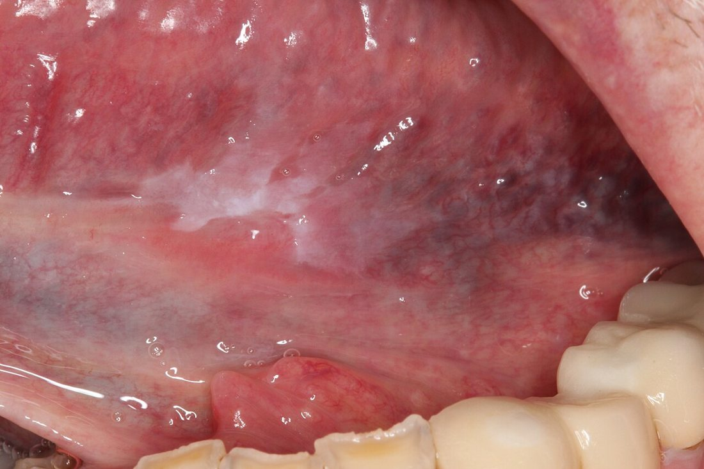
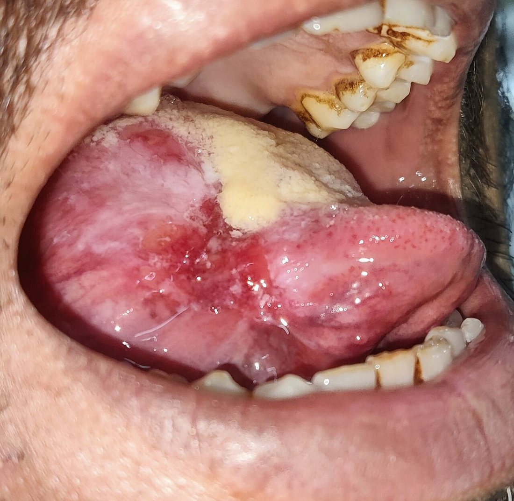
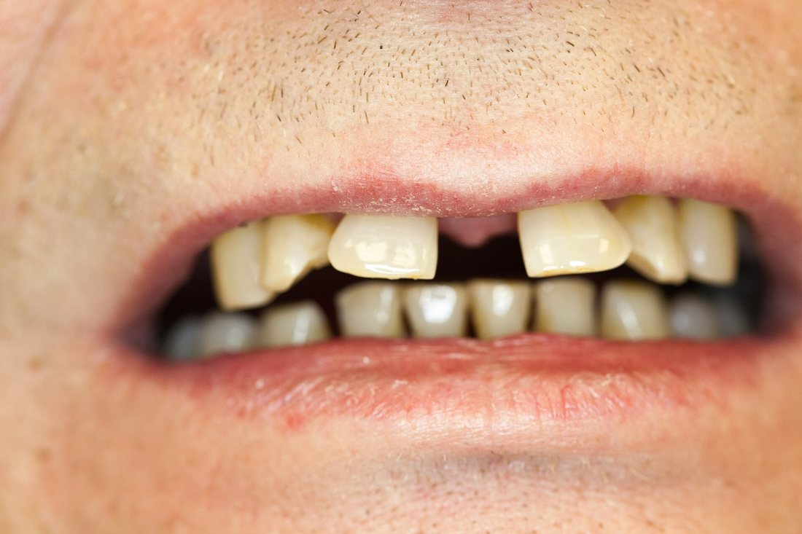
Porque quase toda doença da boca pode ser evitada, mas quem evita é a própria pessoa, em casa, todos os dias. O dentista vê o paciente poucas vezes por ano; quem escova, escolhe a hora do doce, decide fumar e percebe uma ferida é ela, e por isso ela precisa entender o que fazer e quando procurar ajuda. E cuidar da boca não é só estética: é o que deixa a pessoa mastigar, falar, sorrir sem vergonha e dormir sem dor. Três palavras do título vão aparecer o tempo todo: etiologia é a causa da doença; fator de risco é o que aumenta a chance de ela aparecer; e prevenção é o que a gente faz para ela não aparecer ou para ser descoberta cedo. Eu vou falar da cárie, o Bernardo do câncer, o Miguel das manchas brancas, a doença da gengiva a gente divide entre nós, e a Duda junta tudo.
Foto: Coronation Dental Specialty Group, CC BY-SA 4.0, via Wikimedia Commons · Foto: Dikkisherpa5, CC0, via Wikimedia Commons · Foto: Bin im Garten, CC BY-SA 4.0, via Wikimedia Commons
Grupo 2 · 2
Rafael Guerra
Casos reais: cárie
Toda cárie destas começou como uma mancha pequena que ninguém parou. Na maioria, a causa é a mesma: açúcar muitas vezes ao dia e placa que ficou no dente.
Cárie precoce da infânciaProvável causa: Placa e açúcar frequente, como mamadeira doceManchas brancas depois do aparelhoProvável causa: Placa acumulada em volta dos bráquetes
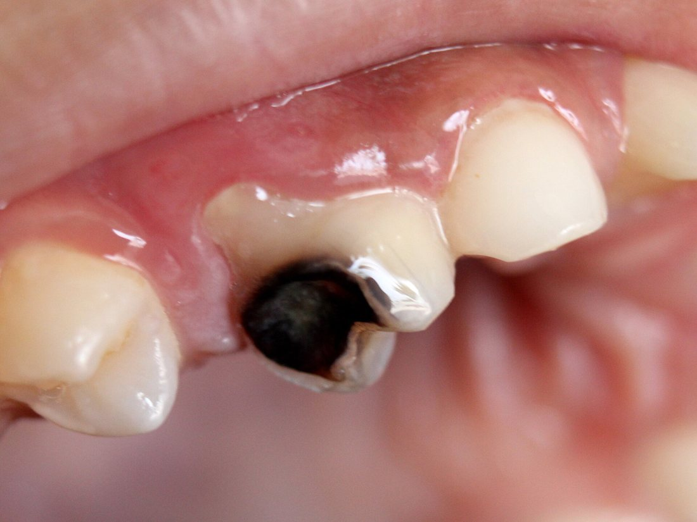
Cárie com cavidade (10 anos)Provável causa: Mancha branca que não foi tratada a tempoCárie em vários dentesProvável causa: Uso de metanfetamina, muito açúcar e pouca higiene
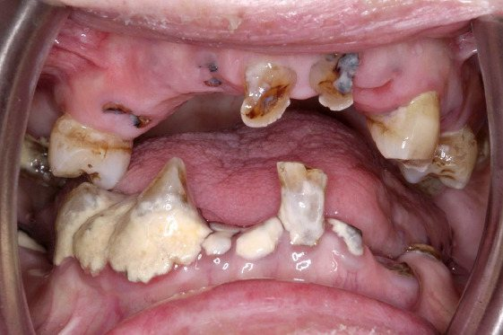
Cárie avançada e cálculo dentalProvável causa: Anos sem higiene adequada e sem dentista
Foto: Goldenfum e Rodrigues, 2019, CC BY-NC · Foto: Pang e Zhi, 2026, CC BY · Foto: Suyash.dwivedi, CC BY-SA 4.0, via Wikimedia Commons · Foto: Dozenist, CC BY-SA 3.0, Wikimedia Commons · Foto: Warren Schneider, CC BY-SA 4.0, via Wikimedia Commons
Grupo 2 · 3
Rafael Guerra
EpidemiologiaEtiologiaFatores de riscoPrevençãoOrientação ao leigo
Cárie: epidemiologia mundial
97,5% dos adultos alemães92,5% dos americanosUS$ 298 bilhões por ano
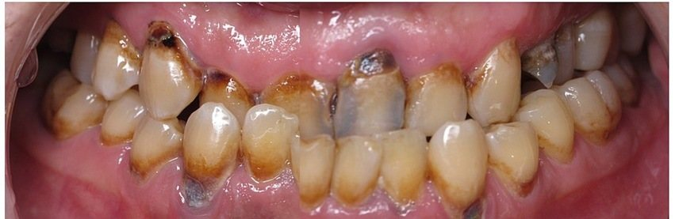
Cárie no colo de quase todos os dentes
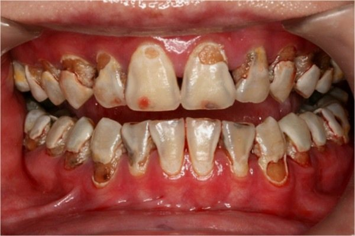
Cárie rampante em adolescente
Quase todo adulto já teve cárie. A revisão de Meyer e colaboradores, de 2024, mostra que 97,5% dos alemães de 35 a 44 anos e 92,5% dos americanos de 35 a 49 já tiveram a doença, e só o tratamento custa cerca de 298 bilhões de dólares por ano no mundo. E daí? É a doença que quase todo mundo vai ter, e que quase sempre poderia ser evitada com escova, flúor e menos açúcar ao longo do dia.
Grupo 2 · 4
Rafael Guerra
EpidemiologiaEtiologiaFatores de riscoPrevençãoOrientação ao leigo
Cárie: epidemiologia no Brasil
CPO-D aos 12 anos: 6,7 (1986) → 1,67 (2023)Flúor na água desde 197441% das crianças de 5 anos com cárie sem tratamento
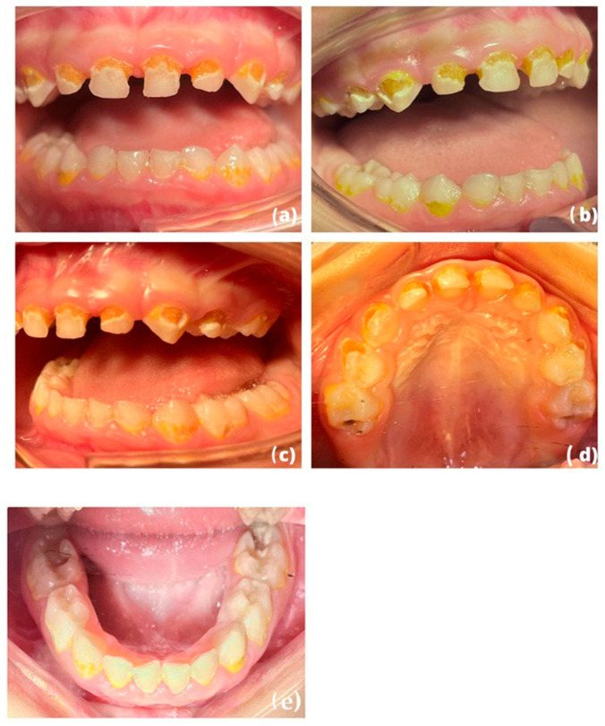
Cárie precoce grave, criança de 4 anos
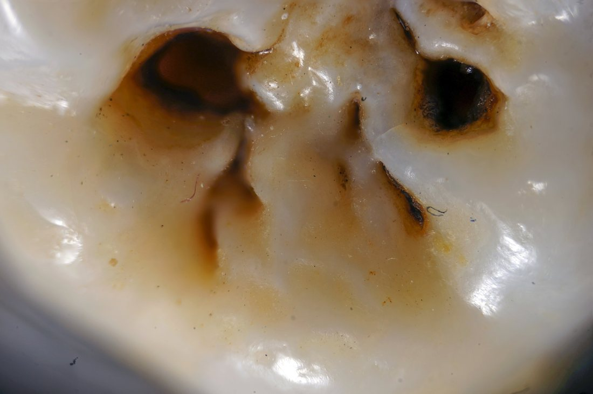
Cárie profunda no siso
Em 1986, uma criança brasileira de 12 anos tinha quase 7 dentes cariados, perdidos ou obturados; em 2023, tinha menos de 2. É o índice CPO-D do SB Brasil, do Ministério da Saúde, que caiu de 6,7 para 1,67. Boa parte dessa queda vem do flúor, que está na água por lei desde 1974 e na pasta, e ajuda o esmalte a recuperar o mineral perdido. Mas a vitória está incompleta: 4 em cada 10 crianças de 5 anos ainda têm cárie sem tratamento.
Foto: Kanareli C et al., Children 2023, CC BY 4.0
Grupo 2 · 5
Rafael Guerra
EpidemiologiaEtiologiaFatores de riscoPrevençãoOrientação ao leigo
Cárie: etiologia
A cárie é multifatorial: ela precisa de dente, placa, açúcar e tempo. As bactérias da placa, como o Streptococcus mutans, usam o açúcar e produzem ácido; quando o pH cai abaixo do pH crítico de 5,5, o esmalte perde mineral, o que se chama desmineralização. No começo, a cárie ainda pode ser parada e revertida, porque a saliva e o flúor devolvem mineral ao esmalte, a remineralização; depois que vira buraco, só o dentista trata.
Sem um dos quatro, não tem cárie.
Diagrama dos fatores da cárie (Keyes, atualizado por Newbrun) · Meyer et al., 2024
Grupo 2 · 6
Rafael Guerra
EpidemiologiaEtiologiaFatores de riscoPrevençãoOrientação ao leigo
Cárie: fatores de risco
Açúcar muitas vezes ao diaPouca escovação e pouco flúorBoca secaAparelho ortodônticoRaiz exposta no idoso
Doces do dia a dia: refrigerante, bala, brigadeiro e bolo
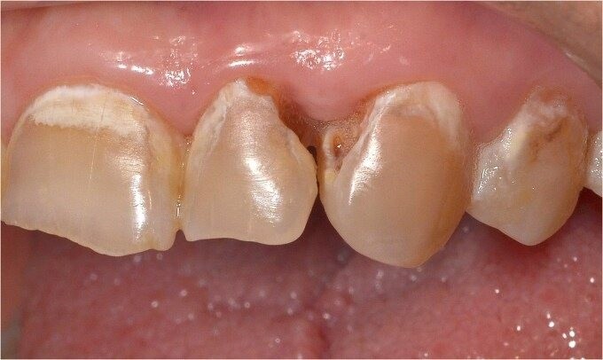
Cárie por boca seca
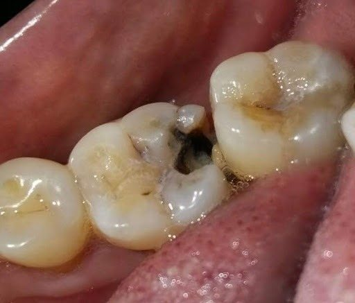
Cavidade na dentina do molar
Não é quanto açúcar a pessoa come, é quantas vezes: cada beliscada é um novo ataque de ácido ao dente. Também aumentam o risco escovar pouco e sem pasta com flúor, ter pouca saliva, a chamada boca seca, e usar aparelho ortodôntico, que acumula placa. Segundo Meyer, correm mais risco as crianças, quem usa aparelho, quem tem boca seca e o idoso com a raiz do dente exposta, que se dissolve com um ácido mais fraco que o do esmalte.
Fotos: domínio público; Nick Carter, CC BY 2.0; Rodrigogomesonetwo, CC BY-SA 4.0; Daria Yakovleva, CC0; via Wikimedia Commons
Grupo 2 · 7
Rafael Guerra
Cárie: prevenção em cada estágio
Antes da cárie, prevenir é evitar que ela aconteça. Depois que ela começa, é impedir o próximo estágio.
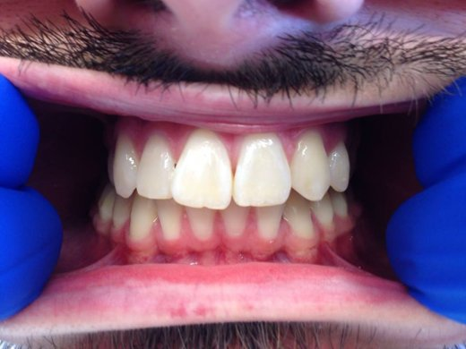
Antes da cárie: dente saudávelPara a cárie não começar
Escova 2 vezes ao dia com pasta com flúor, fio dental, açúcar só nas refeições e dentista de rotina.
1. Mancha brancaPara não virar buraco
Flúor em casa e no dentista, escovação caprichada e menos açúcar. Nessa fase ainda volta atrás.
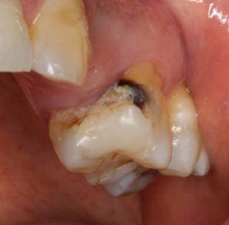
2. Buraco no esmaltePara não chegar na dentina
Restauração pequena logo e controle da placa e do açúcar.
3. Chegou na dentinaPara não chegar na polpa
Restaurar sem demora, sem esperar a dor piorar.
4. Chegou na polpa (nervo)Para não virar abscesso
Tratamento de canal ou extração, sem demora.
5. AbscessoPara a infecção não se espalhar
Dentista com urgência para drenar e tratar o dente.
Ilustração: BruceBlaus / Blausen Medical, CC BY 3.0 (sem legendas) · fotos: Ajeverett, Ickyvickywiki, Dr. Yogesh, S. Dwivedi (CC BY-SA, Commons), Giannakopoulos et al. 2025 e Khorasanchi et al. 2025 (CC BY)
Grupo 2 · 8
Rafael Guerra
E se o abscesso não for tratado?
A infecção não fica parada no dente.
1No dente
pus preso na ponta da raiz
2Face e pescoço
inchaço que se espalha pelos tecidos
3Pelo sangue
pode chegar ao coração e ao cérebro
4Sepse
infecção generalizada, pode matar
Abscesso com fístula na gengiva
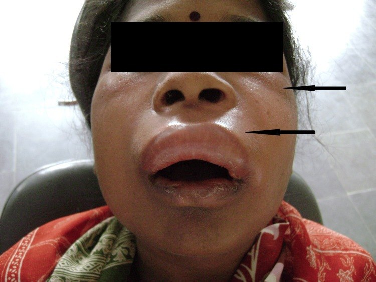
Celulite facial: o rosto inteiro inchado por um dente
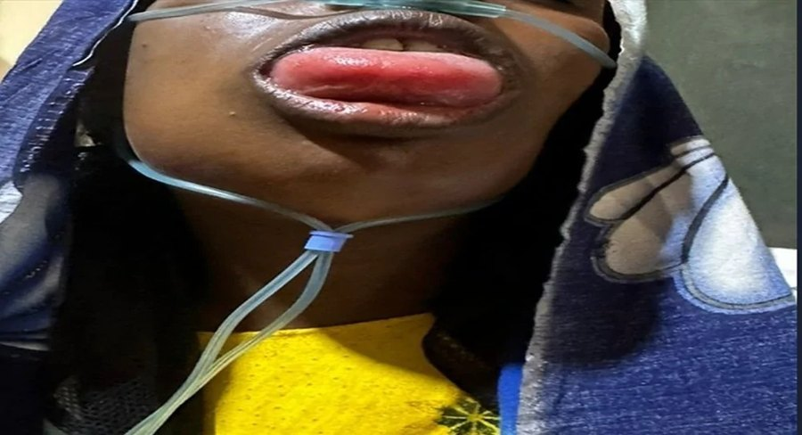
Angina de Ludwig: o pescoço incha e empurra a língua
14 caminhos
Uma revisão de 2024 encontrou 14 formas diferentes de a infecção do dente se espalhar pelo corpo: pescoço, tórax, coração, cérebro. Várias podem matar.
Lou et al., Infection, 2024
Caso real, 2025
Homem de 65 anos com muitas cáries sem tratar. A infecção desceu para o pescoço, virou sepse (infecção generalizada) e ele morreu.
Mikos et al., Am J Case Rep, 2025
Abscesso é urgência
Inchaço, pus ou febre por causa de um dente: dentista no mesmo dia. No SUS, procure a unidade de saúde ou o pronto-atendimento.
Fotos: Commons (Damdent, CC BY-SA); Cureus 2025 (CC BY); Infect Drug Resist 2026 (CC BY-NC)
Grupo 2 · 9
Rafael Guerra
EpidemiologiaEtiologiaFatores de riscoPrevençãoOrientação ao leigo
Cárie: estratégias de prevenção
Açúcar só nas refeiçõesPasta com flúor, 2 minutosFio dentalCriança: sem mamadeira doce à noiteConsulta conforme o risco
Escova, fio dental e escova interdental
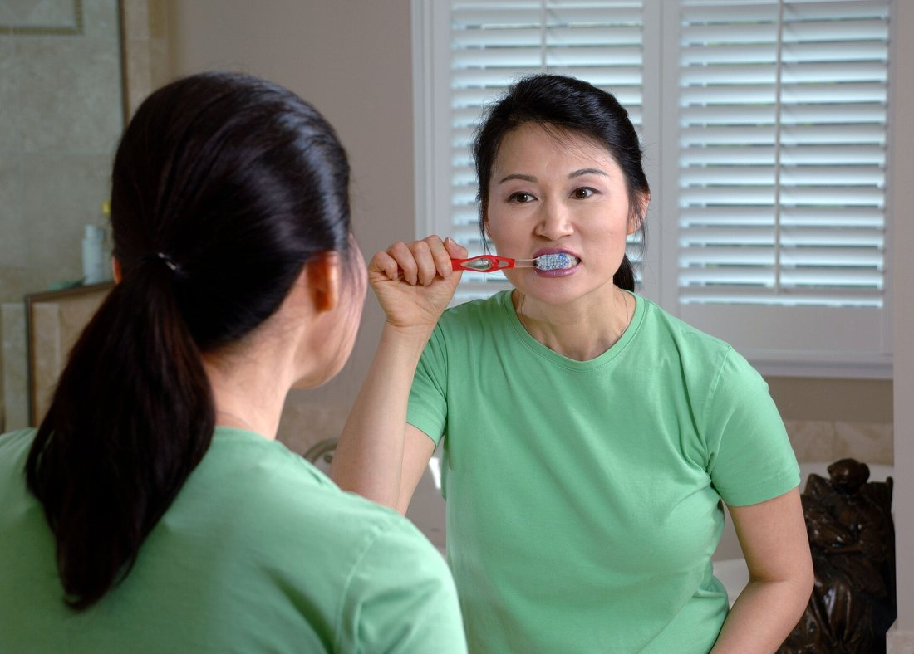
Escovar olhando no espelho
Para prevenir a cárie, o mais importante é controlar o açúcar e a placa. Doce e bebida açucarada de preferência junto das refeições principais, e não beliscando o dia todo. Escovar pelo menos duas vezes ao dia, com pasta com flúor, por uns dois minutos, e usar fio dental entre os dentes. Na criança, quantidade pequena de pasta, do tamanho de um grão de arroz até os 3 anos e de uma ervilha dos 3 aos 6, e nada de dormir com mamadeira doce. E consulta ao dentista com o intervalo que ele indicar para o risco de cada pessoa.
Foto: Milenafoto, CC BY-SA 3.0, via Wikimedia Commons · Foto: Bill Branson/NCI, domínio público
Grupo 2 · 10
Rafael Guerra
EpidemiologiaEtiologiaFatores de riscoPrevençãoOrientação ao leigo
Cárie: recado ao público leigo
Para o público
Em palavras simples: A placa é como uma sujeira grudada no dente que, com açúcar, vira ácido e vai furando o dente aos poucos.
1Escove 2 vezes por dia, com pasta com flúor, por 2 minutos, e passe fio dental.
2Deixe doce e refrigerante para a hora das refeições.
3Na criança, escove antes de dormir e ofereça só água à noite.
Sinal de alerta: Mancha branca, buraco ou dor com doce e gelado: marque o dentista. No começo, ainda volta atrás.
Pergunta para fazer ao paciente (teach-back): “Me conta: o que você vai mudar na escovação e no doce a partir de hoje?”
Como usar: no fim da orientação, o dentista faz essa pergunta e o paciente responde com as palavras dele. Se disser que vai escovar 2 vezes por dia com pasta com flúor e deixar o doce para a hora das refeições, entendeu. Se não, o dentista explica de novo de outro jeito, sem culpar.
Grupo 2 · 11
Rafael Guerra
EpidemiologiaEtiologiaFatores de riscoPrevençãoOrientação ao leigo
Cárie: orientação ao paciente leigo (caso)
Criança de 5 anosMamadeira com açúcar à noiteMancha branca nos dentes
Cárie precoce da infância ("de mamadeira")
Imagine uma criança de 5 anos que dorme tomando mamadeira com achocolatado e já começou a ter manchas brancas nos dentes da frente, que é o começo do que a gente vê nesta foto. A gente explicaria à mãe que a mancha branca no dente ainda pode voltar atrás. A mamadeira da noite fica sem açúcar, um adulto ajuda a escovar antes de dormir com pasta com flúor do tamanho de um grão de ervilha, o doce fica para as refeições, e eles voltam ao dentista. A cárie começa sem dor, e a próxima doença também, só que é muito mais grave.
Foto: Zanwar KS et al., Cureus 2024, CC BY 4.0
Grupo 2 · 12
Bernardo Maia
Casos reais: câncer bucal
No lábio, o vilão é o sol; dentro da boca, o cigarro e o álcool. Casos reais de câncer de boca e de uma lesão que pode virar câncer.
Carcinoma na borda da línguaProvável causa: Fumante há 12 anosCarcinoma na bochechaProvável causa: Fumante há 18 anosCarcinoma atrás do último denteProvável causa: Fumante há 17 anosCarcinoma no lábio inferiorProvável causa: Sol: trabalhador da construção, não fumava
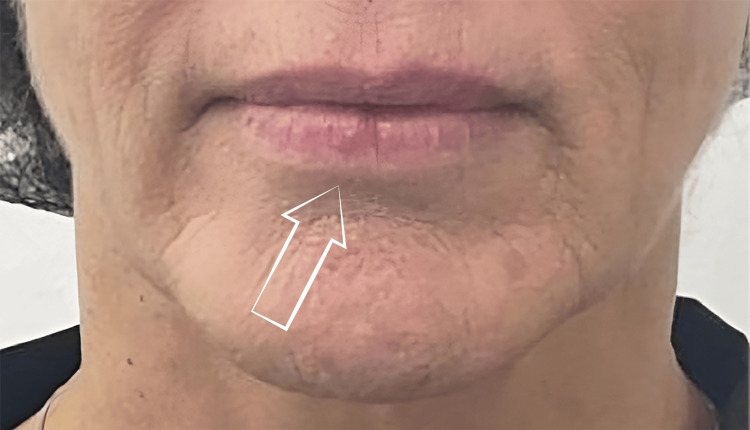
Queilite actínica (pode virar câncer)Provável causa: Sol no lábio, trabalho ao ar livre
Fotos: Gowda Venkatesha et al., Cureus 2026, CC BY · Foto: Cebotari et al., Cureus 2025, CC BY · Foto: Jara P., Cureus 2025, CC BY 4.0
Grupo 2 · 13
Bernardo Maia
EpidemiologiaEtiologiaFatores de riscoPrevençãoOrientação ao leigo
Câncer bucal: epidemiologia mundial
~500 mil casos no mundo (2020)Carcinoma espinocelularOrofaringe = fundo da boca e garganta
Carcinoma na borda da língua
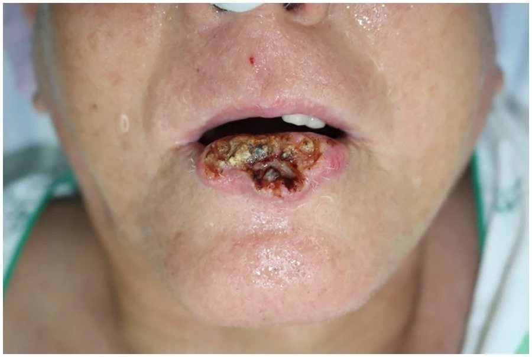
Câncer de lábio avançado
Em 2020, cerca de 500 mil pessoas no mundo descobriram um câncer de boca ou de orofaringe, que é o fundo da boca e o começo da garganta. É o que mostra a revisão de Marinho e colaboradores, da UFRJ. Ele atinge mais os homens, e o tipo mais comum é o carcinoma espinocelular, que nasce no revestimento da boca, principalmente na borda e embaixo da língua e no assoalho da boca. É bem menos comum que a cárie, mas muito mais grave.
Foto: Welleschik, CC BY-SA 3.0, via Wikimedia Commons
Grupo 2 · 14
Bernardo Maia
EpidemiologiaEtiologiaFatores de riscoPrevençãoOrientação ao leigo
Câncer bucal: epidemiologia no Brasil
15.100 casos por ano no Brasil10.900 homens x 4.200 mulheres6.192 mortes em 2020
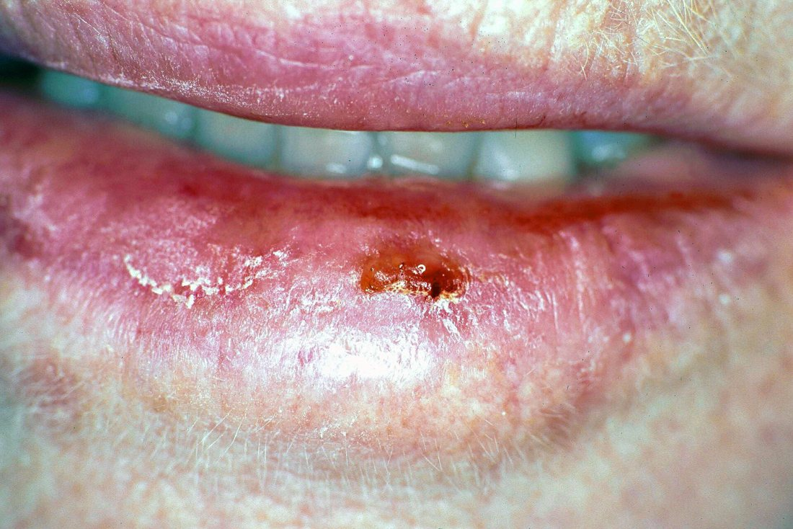
Carcinoma no lábio: ferida que não cicatrizaExame bucal pelo SUS em idoso
Todo dia, cerca de 41 brasileiros descobrem um câncer de boca. O INCA estima 15.100 casos novos por ano de câncer da cavidade oral, que inclui lábio, boca e orofaringe: 10.900 em homens e 4.200 em mulheres. Nos homens, é o quinto câncer mais frequente, sem contar o de pele não melanoma, e em 2020 mais de 6 mil brasileiros morreram dessa doença, quase 17 por dia. E é um câncer que dá para ver a olho nu, só abrindo a boca.
Foto: Coronation Dental Specialty Group, CC BY-SA 4.0, via Wikimedia Commons · Foto: Vanessa Conte/SMS Porto Alegre, via Wikimedia Commons
Grupo 2 · 15
Bernardo Maia
EpidemiologiaEtiologiaFatores de riscoPrevençãoOrientação ao leigo
Câncer bucal: etiologia
Carcinoma espinocelularAgressão repetida às célulasTabaco, álcool, sol e HPV
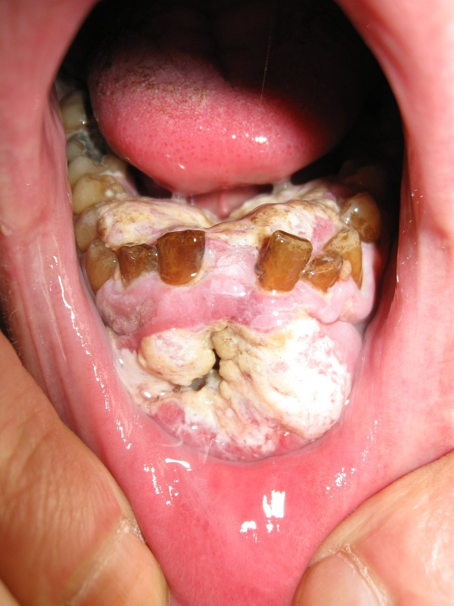
Câncer de boca em fumanteCarcinoma no dorso da língua
O câncer de boca não aparece de um dia para o outro: são anos de agressão às mesmas células. O tipo mais comum é o carcinoma espinocelular, que nasce nas células que revestem a boca; agredidas por muito tempo, elas vão acumulando alterações até começarem a crescer sem controle. Os agentes dessa agressão são as substâncias do tabaco, o álcool, a radiação do sol no lábio e alguns tipos de HPV no fundo da boca e na garganta. E quase sempre começa sem dor.
Foto: Bionerd, CC BY 3.0, via Wikimedia Commons · Foto: Pastore L et al., PLoS Med, CC BY 2.5, via Wikimedia Commons
Grupo 2 · 16
Bernardo Maia
EpidemiologiaEtiologiaFatores de riscoPrevençãoOrientação ao leigo
Câncer bucal: fatores de risco
TabacoÁlcool + cigarro = sinergismoSol: queilite actínicaHPV: vacina no SUS
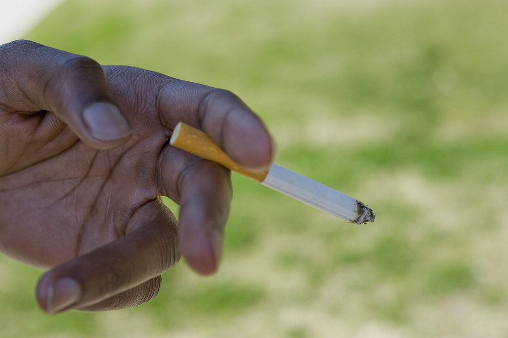
Tabaco
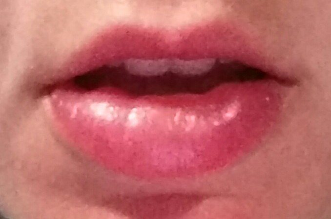
Queilite actínica: lábio castigado pelo sol
O tabaco, em qualquer forma, é a principal causa evitável (Marinho), e ainda 11,5% dos adultos das capitais fumam, segundo o Vigitel 2024. O álcool também aumenta o risco, e junto com o cigarro o risco se multiplica, o que se chama sinergismo: o álcool age como solvente e ajuda as substâncias do cigarro a entrarem na mucosa. Além disso, o sol sem proteção causa queilite actínica e câncer de lábio, e o HPV, que passa pelo sexo oral, está ligado ao câncer de orofaringe; a vacina é grátis no SUS dos 9 aos 14 anos.
Foto: U.S. Air Force (A. Sanchelli), domínio público · Foto: Beardfiercely, CC BY-SA 4.0, via Wikimedia Commons
Grupo 2 · 17
Bernardo Maia
EpidemiologiaEtiologiaFatores de riscoPrevençãoOrientação ao leigo
Fatores de risco: maconha
Mais doença de gengivaCâncer: estudos divergemNão é inofensiva
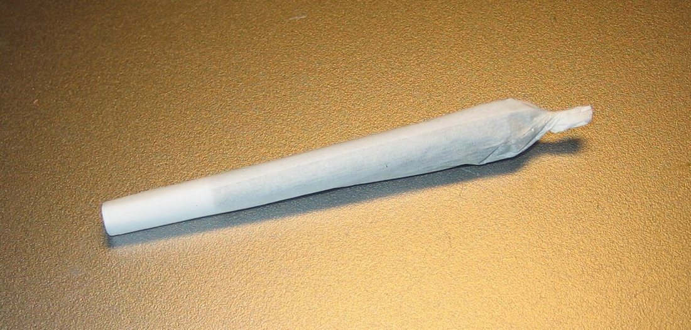
Cigarro de maconha
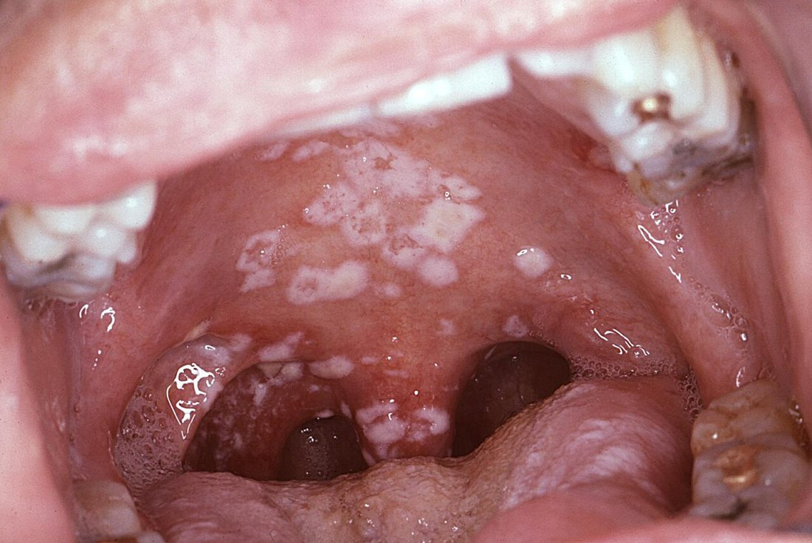
Candidíase (sapinho) no palato
Pouca gente fala da maconha, e aqui os estudos discordam. Uma revisão de 2019, de Chisini, mostra que quem fuma maconha tem um pouco mais de doença da gengiva, e há relatos de boca seca e de sapinho. Sobre câncer, revisões de vários estudos não acharam aumento claro, mas Gallagher e colaboradores, em 2024, acompanharam cerca de 116 mil pessoas com uso problemático de maconha e acharam 2,5 vezes mais câncer de boca do que em quem não usa. Então não dá para dizer que ela é inofensiva.
Foto: Erik Fenderson, domínio público, via Wikimedia Commons · Foto: CDC / Sol Silverman Jr., Public domain, via Wikimedia Commons
Grupo 2 · 18
Bernardo Maia
EpidemiologiaEtiologiaFatores de riscoPrevençãoOrientação ao leigo
Fatores de risco: vape, narguilé e bebidas muito quentes
Vape: proibido desde 2009Narguilé: 1 hora ≈ 100 cigarrosAcima de 65 °C: esôfago
NarguiléLesão branca no palato após uso de vapeChimarrão
Uma hora de narguilé equivale à fumaça de cerca de 100 cigarros, segundo a OMS, citada pelo INCA. E muita gente acha que é mais leve. O vape é proibido no Brasil pela Anvisa desde 2009, e a proibição foi reforçada em 2024; o efeito dele no câncer ainda não é conhecido. Já as bebidas acima de 65 °C, como o chimarrão muito quente, são consideradas provavelmente cancerígenas para o esôfago, o canal que leva o alimento ao estômago; para a boca, a evidência ainda é menor.
Foto: Esin Üstün, CC BY 2.0, via Wikimedia Commons · Foto: Carvalho BFC et al., Clin Exp Dent Res 2024, CC BY 4.0 · Foto: Cesar Vieira, CC BY-SA 4.0, via Wikimedia Commons
Grupo 2 · 19
Bernardo Maia
EpidemiologiaEtiologiaFatores de riscoPrevençãoOrientação ao leigo
Câncer bucal: prevenção pelos sinais de alerta (INCA)
Ferida que não cicatriza em 15 diasMancha vermelha ou brancaCaroçoRouquidão
Eritroplasia: mancha vermelha na bochechaLeucoplasia no palato
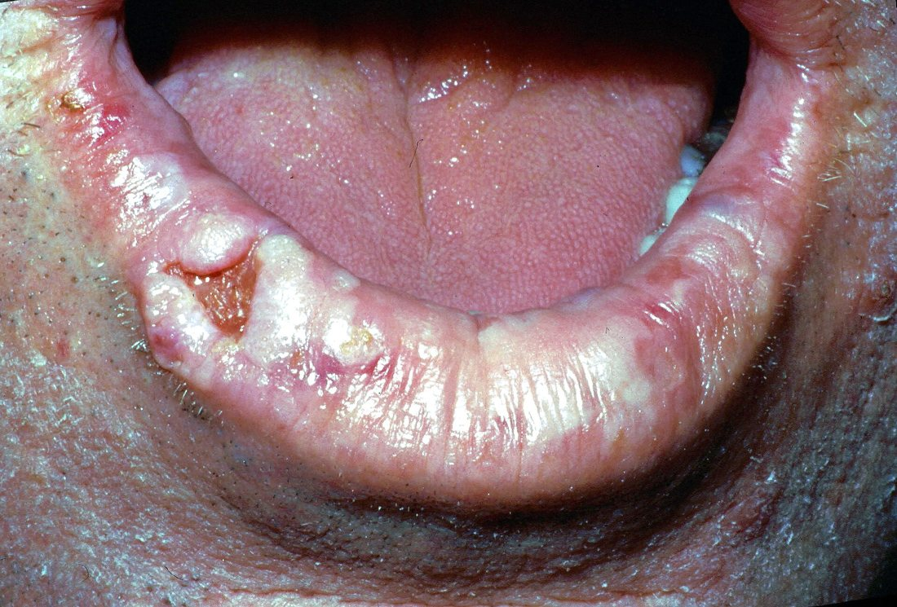
Carcinoma no lábio inferior
Como o câncer de boca começa sem dor, o mais importante é conhecer os sinais. Segundo o INCA, é preciso procurar ajuda quando aparece uma ferida na boca ou no lábio que não cicatriza há mais de 15 dias, uma mancha vermelha ou esbranquiçada, um caroço na boca ou no pescoço, ou uma rouquidão que não passa. Nenhum desses sinais é certeza de câncer, mas qualquer um deles merece ser examinado.
Foto: Öhman J et al., BMC Oral Health 2023, CC BY 4.0 · Foto: Klaus D. Peter, CC BY 3.0 DE, via Wikimedia Commons · Foto: Coronation Dental Specialty Group, CC BY-SA 4.0, via Wikimedia Commons
Grupo 2 · 20
Bernardo Maia
EpidemiologiaEtiologiaFatores de riscoPrevençãoOrientação ao leigo
Câncer bucal: prevenção em cada fase
Antes: tabaco, álcool, sol, HPVLesão suspeita: dentista e biópsiaFase inicial: chance maior de curaFase avançada: tratamento pesadoProtetor labial protege o lábio
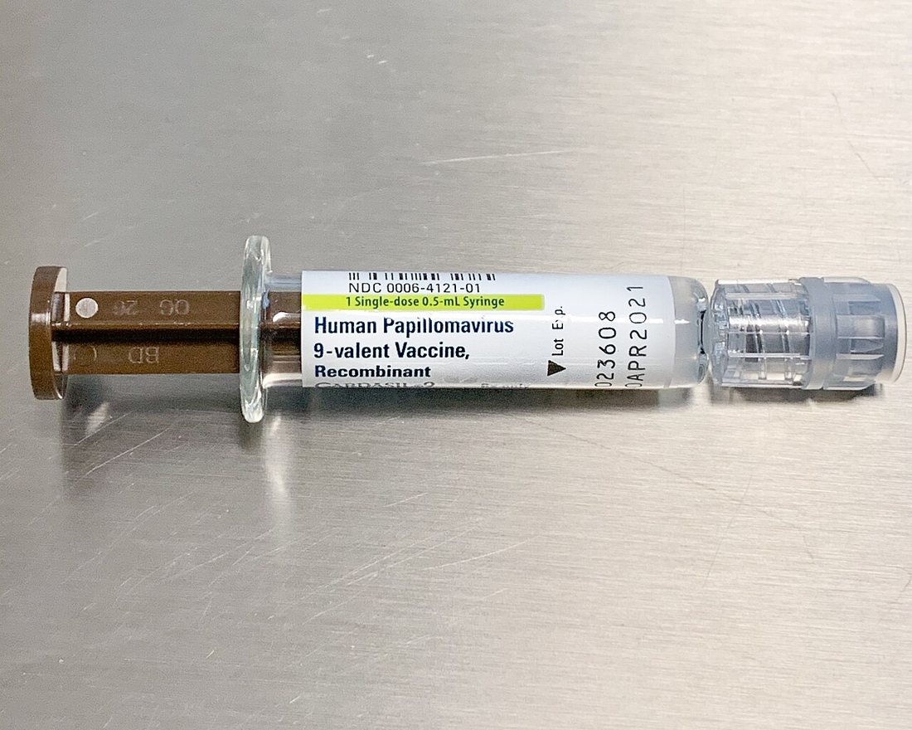
Vacina contra o HPV
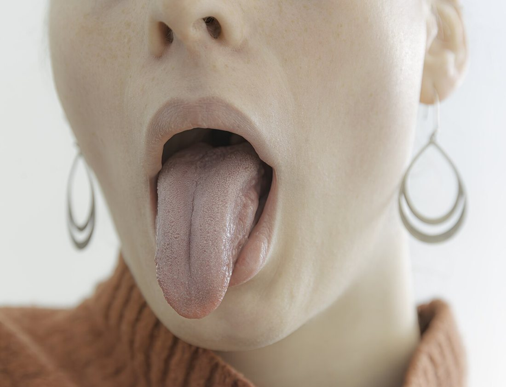
Autoexame: olhar a língua
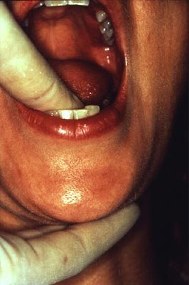
Palpação: exame da boca
No câncer de boca, a prevenção acontece em fases. Antes da doença, é não fumar, limitar o álcool, proteger os lábios do sol com chapéu e protetor labial com filtro solar e tomar a vacina contra o HPV, que o SUS oferece de graça para meninas e meninos de 9 a 14 anos. O protetor labial pesa mais do que parece: num estudo de 2022 com 300 trabalhadores rurais do Rio Grande do Norte, 12% já tinham lesão de sol no lábio, e num estudo de 2025 com pescadores do Amazonas, quase 9 em cada 10 não usavam protetor labial, cerca de 6 em cada 10 já tinham a lesão, e quem usava o protetor tinha menos. Quando aparece uma ferida, mancha ou caroço que não some em duas semanas, a orientação é procurar o dentista, que examina e, se precisar, faz a biópsia. Descoberto no começo, o tratamento é menor e a chance de cura é maior; descoberto tarde, o tratamento é muito mais pesado, e por isso o exame da boca é tão importante.
Foto: Ted Eytan, CC BY-SA 2.0, via Wikimedia Commons · Foto: Lezlie Rewatch, CC0, via Wikimedia Commons · Foto: NIH/NIDCR, domínio público
Grupo 2 · 21
Bernardo Maia
EpidemiologiaEtiologiaFatores de riscoPrevençãoOrientação ao leigo
Câncer bucal: recado ao público leigo
Para o público
Em palavras simples: Cigarro e bebida são como fogo e gasolina: juntos, o estrago na boca é muito maior.
1Procure o tratamento para parar de fumar: o SUS oferece de graça.
2Trabalha ou fica no sol? Use chapéu de aba larga e protetor labial com FPS 30 ou mais, e passe de novo depois de comer ou beber.
3Leve os filhos de 9 a 14 anos para tomar a vacina do HPV no posto.
Sinal de alerta: Ferida, mancha ou caroço na boca que não some em 15 dias: procure o dentista. O exame é rápido e não dói.
Pergunta para fazer ao paciente (teach-back): “Me conta: se aparecer uma ferida na boca, em quanto tempo você procura o dentista?”
Como usar: no fim da orientação, o dentista faz essa pergunta e o paciente responde com as palavras dele. Se disser que vai procurar o dentista se a ferida não sumir em 15 dias, entendeu. Se não, o dentista explica de novo de outro jeito, sem culpar.
Grupo 2 · 22
Bernardo Maia
EpidemiologiaEtiologiaFatores de riscoPrevençãoOrientação ao leigo
Câncer bucal: orientação ao paciente leigo (caso)
Homem, 58 anosFuma e bebe há 30 anosFerida na língua há 3 semanas
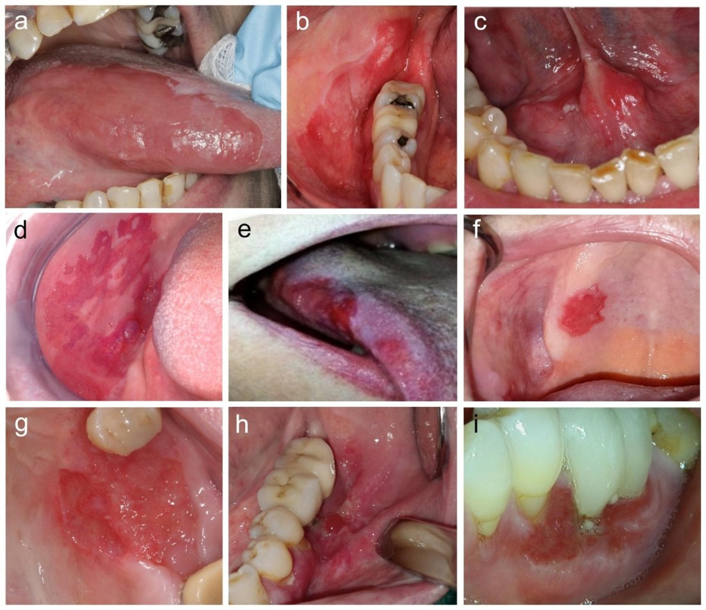
Mancha vermelha que virou câncer
Imagine um homem de 58 anos que fuma e bebe há 30 anos e tem uma ferida na lateral da língua há 3 semanas, sem dor. A gente explicaria que, por passar de 15 dias, essa ferida precisa ser examinada logo: ele procura o dentista do posto de saúde, que examina e encaminha para a biópsia no Centro de Especialidades Odontológicas, pelo SUS. E conversaria com ele, sem julgamento, sobre parar de fumar e de beber. Mas atenção: nem toda mancha na boca é perigosa.
Foto: Öhman J et al., BMC Oral Health 2023, CC BY 4.0
Grupo 2 · 23
Miguel Carvalho
Casos reais: lesões brancas
Mancha branca na boca pode ser muita coisa: de um fungo que sai raspando até uma lesão que pode virar câncer. Cada foto mostra um tipo e o que provavelmente causou.
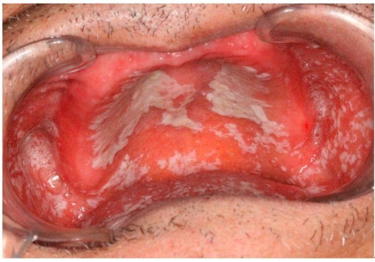
Candidíase (sapinho) no palatoProvável causa: Uso de antibióticoLesão por mordida (atrito)Provável causa: Mania de morder a bochecha e o lábio
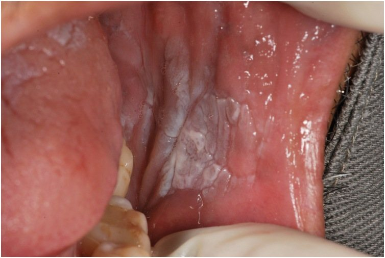
Leucoplasia na bochechaProvável causa: 15 cigarros por dia durante 43 anosPalato do fumanteProvável causa: Fumo, principalmente cachimbo, e o calor da fumaça
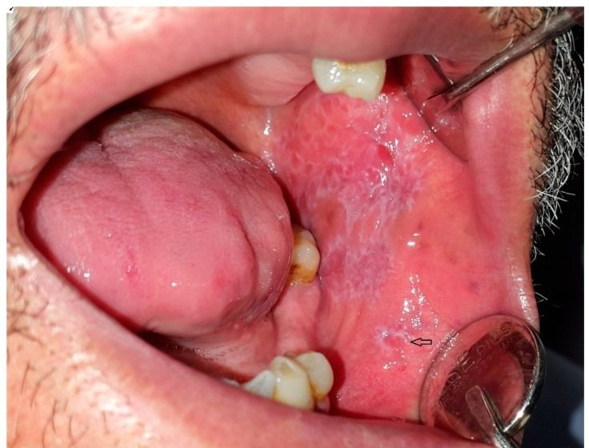
Líquen plano (estrias brancas)Provável causa: Doença da imunidade, não é hábito
Fotos: Mortazavi et al., Dent J 2019, CC BY · Foto: Tolentino et al., An Bras Dermatol 2026, CC BY
Grupo 2 · 24
Miguel Carvalho
EtiologiaFatores de riscoPrevençãoOrientação ao leigo
Sapinho: sai raspandoAtrito ou queimaduraLeucoplasia: não sai
Candidíase no palato (A) e língua saburrosa (B)Queratose friccional: bochecha mordida e rebordo
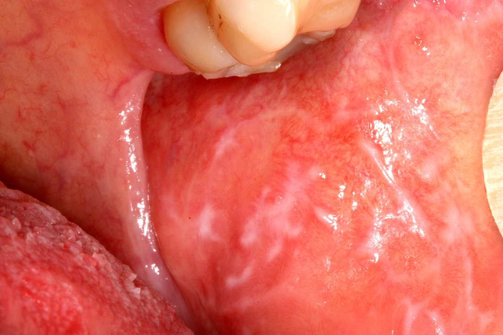
Líquen plano
Uma mancha branca na boca pode ser um fungo que sai raspando, ou uma lesão que pode virar câncer: só olhando, ninguém sabe. Como mostra Harris (2025), pode ser o sapinho, que é um fungo; pode ser atrito, quando um dente quebrado, a mania de morder a bochecha ou uma dentadura mal adaptada machuca sempre o mesmo lugar; pode ser uma queimadura. Ou pode ser uma leucoplasia, uma desordem potencialmente maligna, ou seja, uma lesão com mais chance que o normal de virar câncer.
Foto: Harris P et al., Can Fam Physician 2025, Fig. 2 · Foto: Harris P et al., Can Fam Physician 2025, Fig. 3 · Foto: Ian Furst, CC BY-SA 4.0, via Wikimedia Commons
Grupo 2 · 25
Miguel Carvalho
EtiologiaFatores de riscoPrevençãoOrientação ao leigo
Lesões brancas: fatores de risco e o teste da raspagem
Sapinho: sai raspandoLeucoplasia: diagnóstico de exclusãoDentadura: mais sapinho
Candidíase (sapinho) na língua de criança
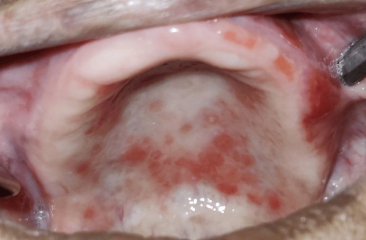
Estomatite por dentadura
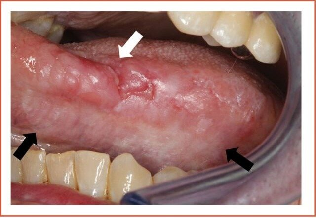
Leucoplasia com úlcera na borda da língua
Um teste simples separa as duas: raspar. O sapinho, que é a candidíase, forma placas brancas que saem quando a gente raspa, deixando a área avermelhada embaixo. Aparece mais em quem tem imunidade baixa, boca seca, usa antibiótico ou corticoide, e em quem usa dentadura, principalmente quem dorme com ela. Já a leucoplasia não sai quando raspa, e só recebe esse nome depois de descartadas todas as outras causas: é um diagnóstico de exclusão, feito pelo profissional.
Foto: James Heilman, MD, CC BY-SA 3.0, via Wikimedia Commons · Foto: Harris P et al., Can Fam Physician 2025, Fig. 1
Grupo 2 · 26
Miguel Carvalho
EtiologiaFatores de riscoPrevençãoOrientação ao leigo
Leucoplasia: risco de virar câncer
Vira câncer em 7,2% a 9,8%Eritroplasia: mancha vermelha, risco maiorBorda e ventre da língua, assoalho
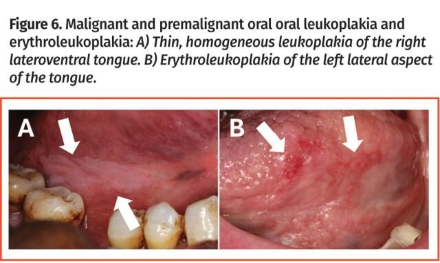
Leucoplasia (A) e eritroleucoplasia (B) na língua
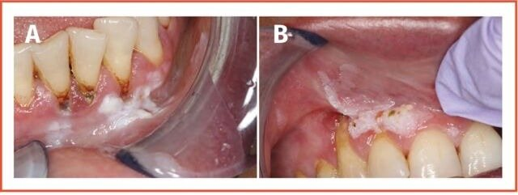
Leucoplasia verrucosa proliferativa
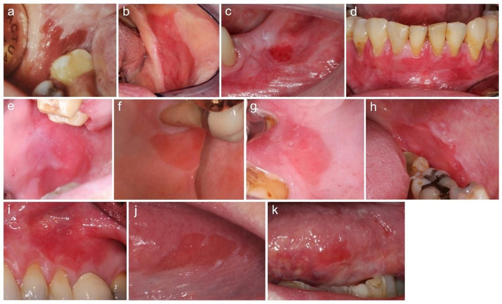
Eritroplasias em vários pacientes
De cada 100 leucoplasias, cerca de 7 a 10 viram câncer. Segundo Harris (2025), ela aparece em 2,6% a 4% das pessoas e vira câncer em 7,2% a 9,8% dos casos: a grande maioria não vira, mas toda leucoplasia precisa ser acompanhada de perto. O risco é maior quando a mancha tem uma parte vermelha; a mancha só vermelha, chamada eritroplasia, é mais rara e tem risco ainda maior. E os lugares mais perigosos são a borda e a parte de baixo da língua e o assoalho da boca.
Foto: Harris P et al., Can Fam Physician 2025, Fig. 6 · Foto: Harris P et al., Can Fam Physician 2025, Fig. 7 · Foto: Öhman J et al., BMC Oral Health 2023, CC BY 4.0
Grupo 2 · 27
Miguel Carvalho
EtiologiaFatores de riscoPrevençãoOrientação ao leigo
Lesões brancas: prevenção, quando procurar o dentista
Sem causa clara: avaliaçãoNão sumiu em 2 semanas: avaliaçãoDiagnóstico: biópsia
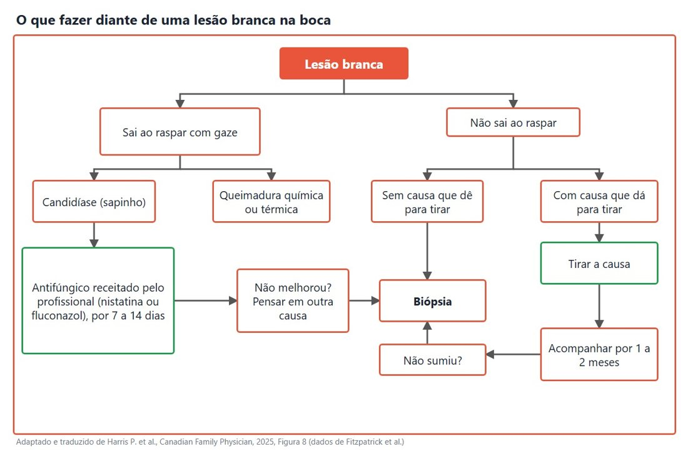
Fluxograma: o que fazer diante de uma lesão branca
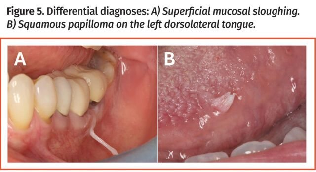
Outras manchas brancas: (A) descamação da mucosa, (B) papiloma na língua
Duas semanas: esse é o prazo. A regra prática, também de Harris (2025), é que a mancha ou a ferida sem uma causa clara, ou que não sumiu em 2 semanas depois de tirar a causa, como um dente quebrado ou uma dentadura que machuca, precisa ser avaliada. Se continuar ou piorar, o profissional faz a biópsia, que é o exame que dá o diagnóstico de verdade. E, de novo, parar de fumar e de beber faz parte do cuidado.
Foto: Harris P et al., Can Fam Physician 2025, Fig. 8 · Foto: Harris P et al., Can Fam Physician 2025, Fig. 5
Grupo 2 · 28
Miguel Carvalho
EtiologiaFatores de riscoPrevençãoOrientação ao leigo
Lesões brancas: estratégias de prevenção
Higiene e descanso da dentaduraAjustar dente ou prótese que machucaParar de fumarBochechar água após a bombinhaVoltar em 2 semanas
Candidíase (sapinho) no palato
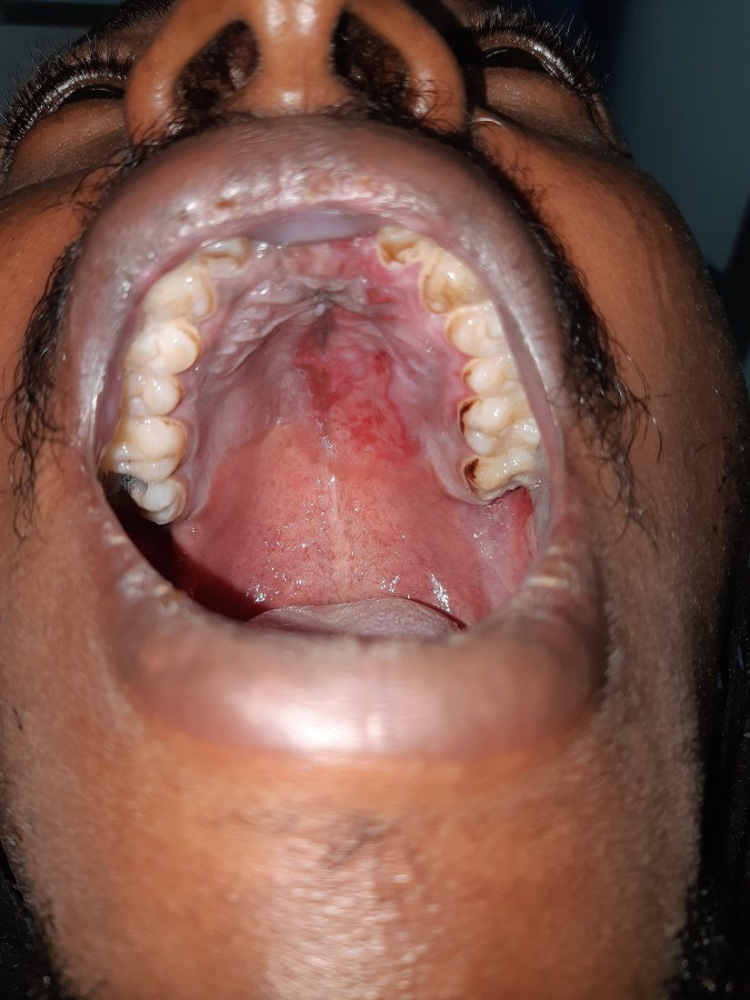
Líquen plano erosivo
Muitas manchas brancas podem ser evitadas. Quem usa dentadura deve limpar todos os dias e tirar para dormir, para não dar fungo. Dente quebrado ou prótese que machuca a bochecha precisa ser ajustado pelo dentista, porque o atrito constante deixa a mucosa branca. Quem usa bombinha de corticoide para asma deve bochechar com água depois, e quem toma antibiótico deve manter a boca bem limpa. Parar de fumar é a medida mais importante contra a leucoplasia. E qualquer mancha que não sumir em duas semanas, depois de tirada a causa, tem que ser examinada.
Foto: CDC, domínio público · Foto: Syed Wali Peeran, CC BY-SA 4.0, via Wikimedia Commons
Grupo 2 · 29
Miguel Carvalho
EtiologiaFatores de riscoPrevençãoOrientação ao leigo
Lesões brancas: recado ao público leigo
Para o público
Em palavras simples: Mancha branca na boca é como uma luz acesa no painel do carro: nem sempre é grave, mas sempre merece ser olhada.
1Limpe a dentadura todos os dias e deixe a boca descansar à noite, sem ela.
2Conserte dente quebrado ou prótese que machuca a bochecha.
3Se fuma, procure ajuda para parar: o SUS tem tratamento gratuito.
Sinal de alerta: Mancha branca que não sai ao raspar e não some em 2 semanas precisa ser examinada.
Pergunta para fazer ao paciente (teach-back): “Me conta: como você vai cuidar da sua dentadura à noite?”
Como usar: no fim da orientação, o dentista faz essa pergunta e o paciente responde com as palavras dele. Se disser que vai tirar a dentadura para dormir e limpar todo dia, entendeu. Se não, o dentista explica de novo de outro jeito, sem culpar.
Grupo 2 · 30
Miguel Carvalho
EtiologiaFatores de riscoPrevençãoOrientação ao leigo
Lesões brancas: orientação ao paciente leigo (caso)
Mulher, 45 anos, fumantePlaca branca na gengivaNão sai raspando
Leucoplasia na gengiva
Imagine uma mulher de 45 anos, fumante, com uma placa branca na gengiva, perto dos dentes de baixo, que não sai quando ela raspa e não dói. A gente explicaria que só olhando não dá para saber o que é, e que ela precisa de avaliação e talvez de uma biópsia. Também diria que a maioria das manchas não é câncer, então não é para entrar em pânico, mas não é para esperar, e o principal conselho seria parar de fumar. O cigarro também afeta a gengiva, e é dela que vamos falar agora.
Foto: National Cancer Institute, domínio público
Grupo 2 · 31
Miguel Carvalho
Casos reais: doença periodontal
Da gengiva que só sangra ao dente que cai: é a mesma doença, em fases. Os casos vão da gengivite, que ainda volta ao normal, à periodontite avançada, com dentes moles.
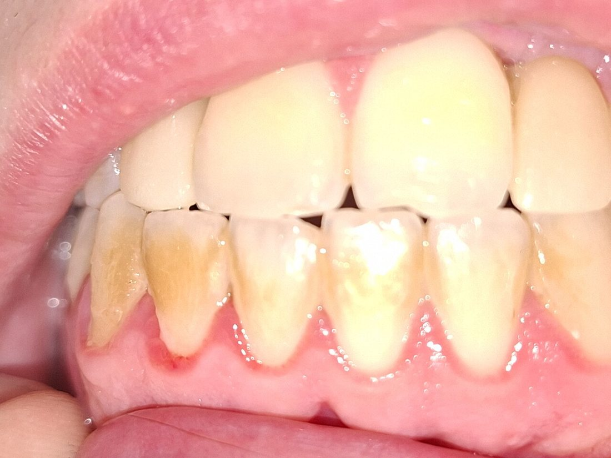
GengiviteProvável causa: Placa acumulada na gengivaPeriodontite com cálculo dentalProvável causa: Diabetes recém-descoberto piorando a gengiva
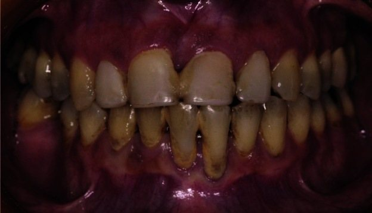
Periodontite e dente afastadoProvável causa: Fumante pesado, mais de 40 cigarros por dia
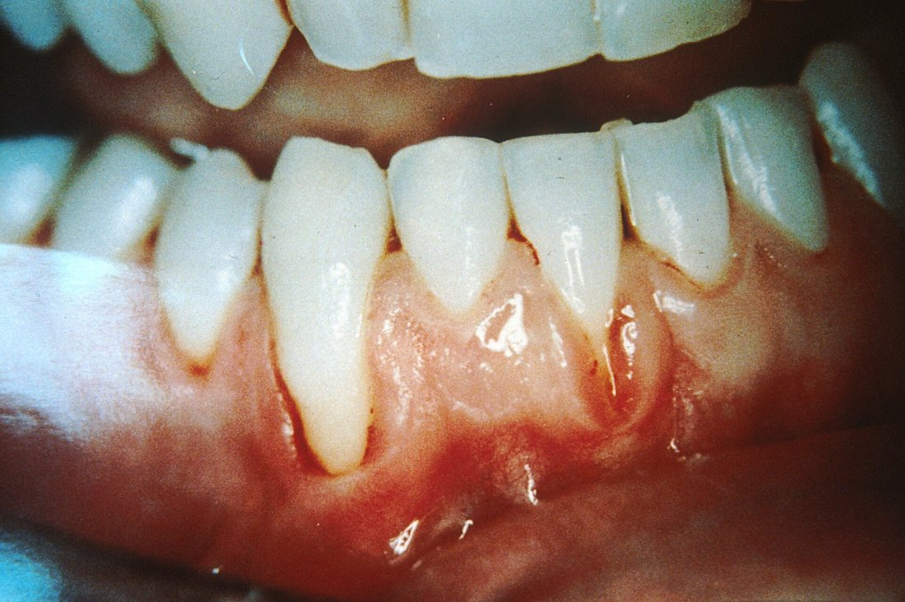
Gengiva retraída, raiz expostaProvável causa: Tabaco de mascar
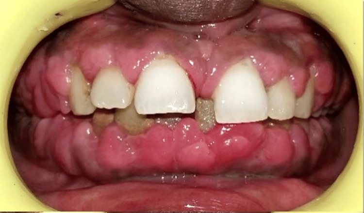
Gengiva aumentadaProvável causa: Remédio para epilepsia (fenitoína)
Foto: Roquex, CC0, via Wikimedia Commons · Foto: Khade et al., Cureus 2023, CC BY · Foto: Mouchref Hamasni et al., CC BY · Foto: National Cancer Institute (EUA), domínio público · Foto: Gupta et al., Cureus 2026, CC BY
Grupo 2 · 32
Miguel Carvalho
EpidemiologiaEtiologiaFatores de riscoPrevençãoOrientação ao leigo
Doença periodontal: etiologia
Placa acumulada → gengiviteGengivite: volta ao normalPeriodontite: osso não volta
Placa bacteriana corada com evidenciador
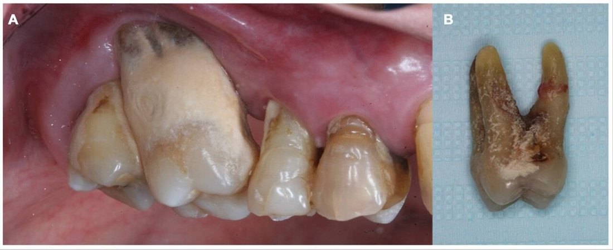
Periodontite: cálculo dental e perda de inserção
A doença da gengiva começa como gengivite: a placa acumulada deixa a gengiva vermelha, inchada e sangrando na escovação. Se a placa continua, a inflamação vira periodontite, que destrói o periodonto, o osso e as fibras que seguram o dente, até ele amolecer e cair. A diferença principal é que a gengivite volta ao normal com limpeza, e a periodontite não devolve o osso perdido.
Foto: Ajeverett, CC BY-SA 4.0, via Wikimedia Commons · Foto: Teixeira et al., CC BY 4.0, via Wikimedia Commons
Grupo 2 · 33
Miguel Carvalho
EpidemiologiaEtiologiaFatores de riscoPrevençãoOrientação ao leigo
Doença periodontal: epidemiologia no Brasil
54% com cálculo dental41,5% com sangramento36,5% dos idosos sem dentesDentadura também precisa de cuidado
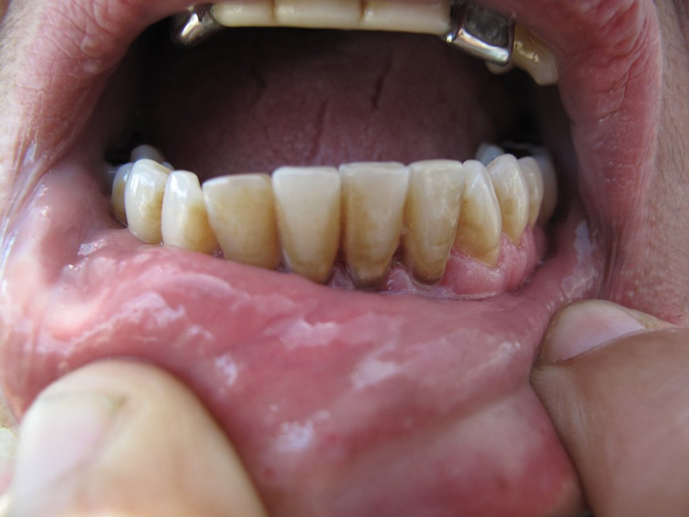
Periodontite: retração e dentes moles
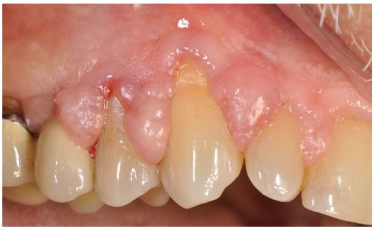
Gengiva aumentada por remédio de pressão
Mais de 1 em cada 3 brasileiros de 65 a 74 anos não tem nenhum dente na boca: são 36,5%, segundo o SB Brasil 2023. Essa perda começa bem antes, na gengiva: entre os adultos de 35 a 44 anos, 54% têm cálculo dental, 41,5% têm gengiva que sangra e cerca de 1 em cada 6 já tem bolsa periodontal, que é sinal de periodontite. E quem perdeu os dentes continua precisando do dentista: limpar a dentadura todo dia, tirar para dormir, trocar quando ficar folgada e fazer o exame da boca uma vez por ano.
Foto: Downtowngal, CC BY-SA 4.0, via Wikimedia Commons
Grupo 2 · 34
Maria Eduarda Schoralick
EpidemiologiaEtiologiaFatores de riscoPrevençãoOrientação ao leigo
Doença periodontal: fatores de risco
Higiene ruim e cálculo dentalCigarroDiabetes descontroladoFalta de acompanhamento
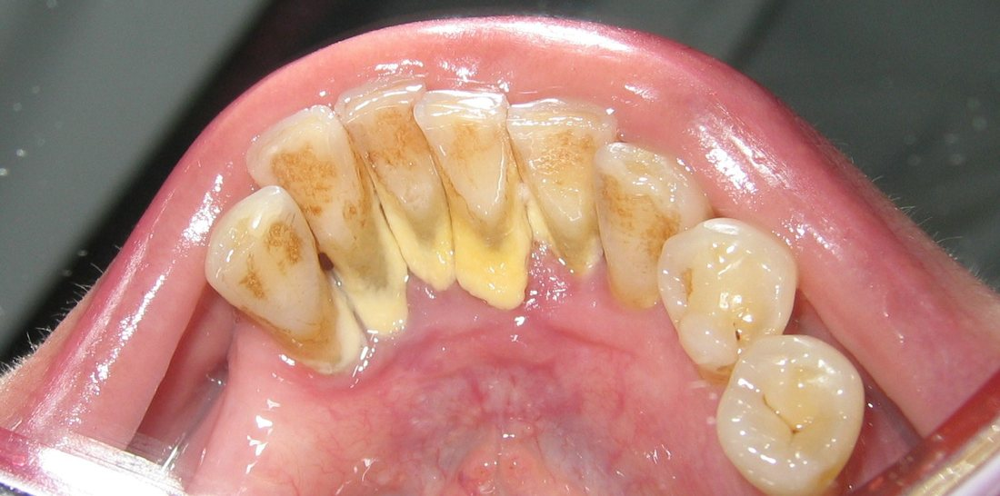
Cálculo dental atrás dos dentes de baixo
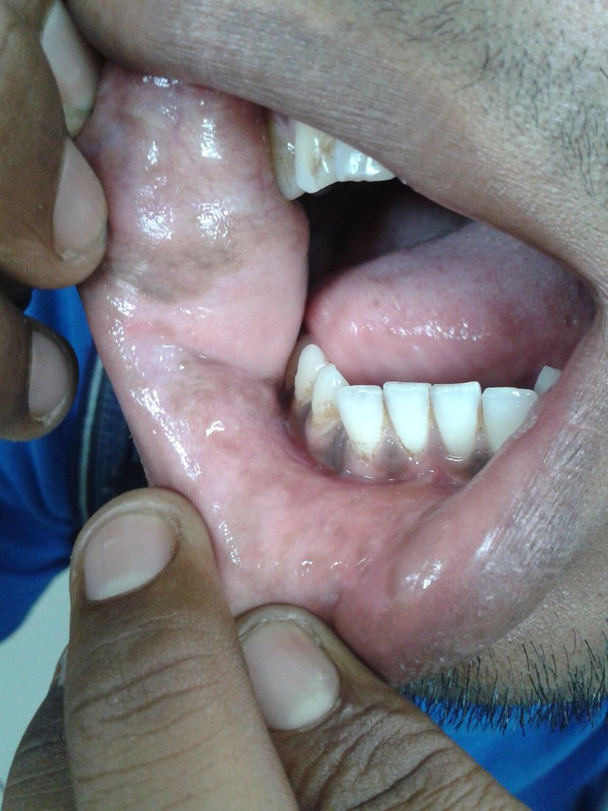
Gengiva manchada em fumante
O cigarro esconde a doença da gengiva: ele diminui o sangramento, e o fumante muitas vezes nem percebe que está doente. Junto com o diabetes descontrolado, é o que mais faz a gengivite virar periodontite. Também pesa a higiene ruim, que deixa a placa endurecer e virar cálculo dental, que a escova não tira mais. E a falta de acompanhamento no dentista deixa a doença avançar em silêncio.
Foto: Skinstudy, CC BY-SA 3.0, via Wikimedia Commons
Grupo 2 · 35
Bernardo Maia
EpidemiologiaEtiologiaFatores de riscoPrevençãoOrientação ao leigo
Fatores de risco: periodontite e câncer bucal
É aqui que a gengiva e o câncer se encontram. A revisão de Pigossi (2025) juntou 116 estudos, clínicos, em animais e de laboratório; somando os estudos clínicos, quem tinha periodontite no exame teve chance cerca de 3 vezes maior de carcinoma espinocelular de boca. Bactérias da gengiva doente podem favorecer a inflamação e o tumor. A meta-análise de Gopinath (2020), com 21 estudos, chegou a um número parecido: chance cerca de 3 vezes maior de câncer de cabeça e pescoço. Mas é associação, não causa: uma explicação é o cigarro, que provoca as duas doenças ao mesmo tempo, o que em pesquisa se chama fator de confusão.
Associação não é causa: o cigarro pode explicar parte da ligação.
Esquema baseado em Pigossi et al., Cancer Metastasis Rev, 2025
Grupo 2 · 36
Rafael Guerra
EpidemiologiaEtiologiaFatores de riscoPrevençãoOrientação ao leigo
Doença periodontal: prevenção em cada estágio
Gengivite: ainda volta atrásPeriodontite inicial: perde ossoPeriodontite avançada: dente moleManutenção para sempre
Gengivite: antes e depois da limpezaPeriodontite avançada
A doença da gengiva também tem estágios. Na gengivite, a gengiva fica vermelha, inchada e sangra ao escovar, e ainda dá para voltar atrás: com a placa removida todos os dias e uma limpeza no dentista, ela volta ao normal. Se a placa continua, vira periodontite: a inflamação começa a destruir o osso que segura o dente, e o que foi perdido não volta sozinho. No estágio avançado, o dente fica mole, a gengiva retrai e o dente pode cair. Daí em diante a orientação é tratamento com o dentista e consultas de manutenção para o resto da vida, junto com parar de fumar e controlar o diabetes.
Foto: Onetimeuseaccount, CC0, via Wikimedia Commons · Foto: Agustín Zerón, domínio público, via Wikimedia Commons
Grupo 2 · 37
Rafael Guerra
EpidemiologiaEtiologiaFatores de riscoPrevençãoOrientação ao leigo
Doença periodontal: prevenção e controle do biofilme
Escova 2x ao dia com flúorFio dental 1xRetorno ao dentista
Consulta de rotina no dentista
Na prática, a prevenção é escovar pelo menos 2 vezes ao dia com pasta com flúor, passar fio dental 1 vez e trocar a escova a cada 3 meses, além de ir ao dentista. Conversar e motivar o paciente ajuda a criar esse hábito, como mostrou a revisão de Carra (2020), com 14 estudos. Por isso a consulta de retorno importa: não basta mandar escovar, é preciso acompanhar.
Foto: Jameswasswa, CC BY-SA 4.0, via Wikimedia Commons
Grupo 2 · 38
Maria Eduarda Schoralick
EpidemiologiaEtiologiaFatores de riscoPrevençãoOrientação ao leigo
Doença periodontal: recado ao público leigo
Para o público
Em palavras simples: Gengiva que sangra é como um alarme: o sangue avisa que tem placa acumulada, não que a escova está forte demais.
1Continue escovando, com escova macia, e passe fio todos os dias.
2Faça a limpeza no dentista para tirar o cálculo dental, que a escova não remove.
3Se tem diabetes, mantenha o açúcar do sangue controlado: a gengiva melhora junto.
Sinal de alerta: Dente mole, gengiva que desce ou mau hálito que não passa: procure o dentista.
Pergunta para fazer ao paciente (teach-back): “Me conta: o que você faz quando a gengiva sangrar na escovação?”
Como usar: no fim da orientação, o dentista faz essa pergunta e o paciente responde com as palavras dele. Se disser que vai continuar escovando com escova macia e passar fio, mesmo com sangue, entendeu. Se não, o dentista explica de novo de outro jeito, sem culpar.
Grupo 2 · 39
Maria Eduarda Schoralick
EpidemiologiaEtiologiaFatores de riscoPrevençãoOrientação ao leigo
Doença periodontal: orientação ao paciente leigo (caso)
Homem, 40 anosGengiva sangraAcha que é normal
Gengiva inchada e sangrando
Imagine um homem de 40 anos cuja gengiva sangra toda vez que ele escova, e que por isso passou a escovar menos. A gente explicaria que é justamente o contrário: o sangramento mostra que tem placa acumulada, e a solução é limpar melhor, com escova macia e fio dental todos os dias. Ele também precisaria de uma limpeza profissional para tirar o cálculo dental e de voltar ao dentista para acompanhar. E, se fuma, parar ajuda muito a gengiva.
Grupo 2 · 40
Maria Eduarda Schoralick
Correlação: uma boca só, os mesmos hábitos
Escovar previne a cárie e a doença da gengiva. Parar de fumar protege contra câncer, mancha branca e doença da gengiva. E uma consulta pode achar as quatro.
Grupo 2 · 41
Maria Eduarda Schoralick
EpidemiologiaOrientação ao leigo
Epidemiologia no Brasil: estamos melhorando?
Doença
2010
2023
Tendência
Cárie (12 anos)
CPO-D 2,07 (1986: 6,7)
CPO-D 1,67: baixa prevalência pela OMS
↓ melhorando
Cárie (5 anos)
46,6% sem cárie
53,2% sem cárie; mas 41% com cárie sem tratar
↓ melhorando
Gengiva (35 a 44 anos)
~64% com cálculo dental; ~metade sangrando
54% com cálculo; 41,5% sangrando
↓ melhorando
Idosos sem nenhum dente
~53%
36,5%
↓ melhorando, ainda alto
Câncer de boca
—
15.100 casos/ano; 5º câncer mais comum nos homens
→ alto; cigarro caiu de 15,7% para 11,5%
Lesões brancas
—
sem levantamento nacional
?
O que o Brasil faz: flúor na água (lei de 1974), lei em 2023.">Brasil Sorridente (2004, lei em 2023), CEOs com diagnóstico de câncer de boca, vacina do HPV e tratamento gratuito para parar de fumar no SUS.
SB Brasil 2010 e 2023 (Ministério da Saúde) · INCA, Estimativa 2023 · Vigitel 2006-2024
Grupo 2 · 42
Maria Eduarda Schoralick
EpidemiologiaOrientação ao leigo
Epidemiologia no mundo (1990 a 2021): melhorando ou piorando?
Doença
Em 2021
Tendência 1990 → 2021
Cárie (dentes permanentes)
27,5% das pessoas com cárie sem tratar
↓ caiu um pouco
Cárie (dentes de leite)
a mais comum nas crianças
→ não mudou
Periodontite grave
12,5% das pessoas
→ não mudou
Perda total dos dentes
menos comum que antes
↓ caiu
Câncer de lábio e boca
389.846 casos e 188.438 mortes (2022)
↑ aumentou
Total
3,7 bilhões de pessoas com doença bucal
↑ mais casos (a população cresceu e envelheceu)
Conclusão dos autores do estudo: em 30 anos quase nada mudou; os esforços não deram certo e é preciso um caminho diferente.
GBD 2021 Oral Disorders Collaborators, The Lancet, 2025 · OMS, ficha de saúde bucal (2025)
Grupo 2 · 43
Maria Eduarda Schoralick
Caso real: Deamonte Driver, 12 anos (EUA, 2007)
Um dente. Uma extração de 80 dólares. Um menino de 12 anos que morreu.
Deamonte, 12 anos, com a mãe, depois da cirurgia no cérebro
Jan. 2007Volta da escola com dor de cabeça. Ninguém tinha percebido a dor de dente.
No hospitalO abscesso já tinha chegado ao cérebro: duas cirurgias de emergência.
25 fev. 2007Morre depois de mais de seis semanas internado.
Por quê?Só ~900 dos 5.500 dentistas do estado atendiam pelo plano público; a mãe passava os dias tentando tratar o irmão, que tinha seis dentes para arrancar.
O que mudou depois dele
AcessoMaryland criou um comitê de saúde bucal e passou a pagar mais aos dentistas do plano público.
OrientaçãoLançou a campanha "Dentes saudáveis, crianças saudáveis" para ensinar gestantes e pais de crianças pequenas.
ResultadoCrianças do plano público atendidas no dentista: 32,9% (2007) → 43,8% (2009). Em 2011, 1º lugar do país em saúde bucal infantil.
O paísEm 2009, os EUA passaram a obrigar dentista no plano de saúde das crianças.
No Brasil o acesso existe pelo SUS. O que salva é a família reconhecer o sinal de alerta e procurar a tempo: é a orientação ao público leigo.
Foto: Linda Davidson/The Washington Post, 2007 (uso em aula) · NBC News/Washington Post (2007) · PBS Frontline (2012) · Maryland Dept. of Health · Pew Charitable Trusts (2011) · Health Affairs (2009)
Grupo 2 · 44
Maria Eduarda Schoralick
EpidemiologiaOrientação ao leigo
Orientação ao paciente leigo: como falar para ele entender
Palavra simples e analogiaSó 3 pontos, ditos no positivoDesenho e papel na mãoFamília juntoSinais de alertaTeach-back
Exame clínico da boca
Tudo isso só funciona se a pessoa entender. Por isso a gente troca o termo técnico pela palavra do dia a dia, gengiva que sangra em vez de gengivite, e usa comparações, como dizer que a placa é uma sujeira grudada que vira ácido. Fala só os três pontos mais importantes e diz o que fazer, em vez de listar proibições. Mostra um desenho ou uma foto, entrega a orientação por escrito e, quando o cuidado é mais complicado, chama um familiar para ouvir junto. Explica quais sinais pedem para voltar logo ao dentista e acolhe as dúvidas sem julgamento. No fim, em vez de perguntar se entendeu, pede que a pessoa explique com as palavras dela o que vai fazer em casa: é o método teach-back, recomendado pela agência de saúde americana AHRQ.
Foto: U.S. Navy (MC3 Margaret Keith), domínio público
Grupo 2 · 45
Maria Eduarda Schoralick
Conclusão: o recado para o público
Primária: evitarSecundária: achar cedoTerciária: tratar e reabilitarNão espere doer
Gengivite necrosante
A prevenção tem três níveis. A primária evita que a doença apareça: escova, flúor, menos açúcar, alimentação equilibrada, sem cigarro e com menos álcool, e a vacina do HPV. A secundária acha a doença cedo: consulta de rotina, autoexame e atenção a qualquer ferida ou mancha que não some há mais de 15 dias. A terciária trata e reabilita quem já tem a doença, como a dentadura para quem perdeu os dentes. Em resumo: não espere sentir dor para cuidar da sua boca. O Deamonte não teve essa chance; o paciente que a gente orienta tem.
Grupo 2 · 46
Maria Eduarda Schoralick
Referências (ABNT)
Artigos-base (enviados ao professor no grupo)
CARRA, M. C. et al. Promoting behavioural changes to improve oral hygiene in patients with periodontal diseases: a systematic review. Journal of Clinical Periodontology, v. 47, supl. 22, p. 72-89, 2020. DOI: 10.1111/jcpe.13234.
GOPINATH, D. et al. Periodontal diseases as putative risk factors for head and neck cancer: systematic review and meta-analysis. Cancers, v. 12, n. 7, 1893, 2020. DOI: 10.3390/cancers12071893.
HARRIS, P. et al. Common white lesions of the oral cavity: review of clinical presentations and management. Canadian Family Physician, v. 71, n. 1, p. 19-25, 2025. DOI: 10.46747/cfp.710119.
MARINHO, M. F. P. et al. National and subnational plans for primary prevention and early detection of oral and oropharyngeal cancer: a scoping review. Cadernos de Saúde Pública, v. 40, n. 12, e00233923, 2024. DOI: 10.1590/0102-311XEN233923.
MEYER, F. et al. Caries etiology and preventive measures. European Journal of Dentistry, v. 18, n. 3, p. 766-776, 2024. DOI: 10.1055/s-0043-1777051.
PIGOSSI, S. C. et al. Demystifying the link between periodontitis and oral cancer: a systematic review integrating clinical, pre-clinical, and in vitro data. Cancer and Metastasis Reviews, v. 44, n. 3, p. 67, 2025. DOI: 10.1007/s10555-025-10285-z.
Dados complementares
CHISINI, L. A. et al. Is the use of Cannabis associated with periodontitis? A systematic review and meta-analysis. Journal of Periodontal Research, v. 54, n. 4, p. 311-317, 2019. DOI: 10.1111/jre.12639.
GALLAGHER, T. J. et al. Cannabis use and head and neck cancer. JAMA Otolaryngology-Head & Neck Surgery, v. 150, n. 12, p. 1068-1075, 2024. DOI: 10.1001/jamaoto.2024.2419.
LOU, Y. et al. Odontogenic infections in the antibiotic era: approach to diagnosis, management, and prevention. Infection, v. 52, n. 2, p. 301-311, 2024. DOI: 10.1007/s15010-023-02117-5.
MIKOS, E. et al. From dental decay to systemic failure: the overlooked consequences of poor oral health. American Journal of Case Reports, v. 26, e948200, 2025. DOI: 10.12659/AJCR.948200.
BRASIL. Ministério da Saúde. SB Brasil 2023: Pesquisa Nacional de Saúde Bucal: relatório técnico. Brasília, 2024. · INCA. Estimativa 2023: incidência de câncer no Brasil. Rio de Janeiro, 2022; Câncer de boca: versão para a população; Informe 316 (narguilé). · BRASIL. Vigitel Brasil 2006-2024. Brasília, 2025.
SHEIHAM, A.; WATT, R. G. The common risk factor approach: a rational basis for promoting oral health. Community Dentistry and Oral Epidemiology, v. 28, n. 6, p. 399-406, 2000. DOI: 10.1034/j.1600-0528.2000.028006399.x.
GBD 2021 ORAL DISORDERS COLLABORATORS. Trends in the global, regional, and national burden of oral conditions from 1990 to 2021: a systematic analysis for the Global Burden of Disease Study 2021. The Lancet, v. 405, n. 10482, p. 897-910, 2025. DOI: 10.1016/S0140-6736(24)02811-3.
FARIA, M. H. D. et al. Actinic cheilitis in rural workers: prevalence and associated factors. Einstein (São Paulo), v. 20, eAO6862, 2022. DOI: 10.31744/einstein_journal/2022AO6862.
SILVA, R. B. S. E. et al. Actinic cheilitis and associated factors in fishermen living in a rural riverside community in the Amazon. Brazilian Dental Journal, v. 36, e236302, 2025. DOI: 10.1590/0103-644020256302.
OPAS/OMS. IARC Monographs evaluate drinking coffee, maté, and very hot beverages. 15 jun. 2016. · AHRQ. Tool: Teach-Back. TeamSTEPPS. · ANVISA. RDC n. 46/2009 e RDC n. 855/2024.
PBS FRONTLINE. Tragic results when dental care is out of reach. 26 jun. 2012. · NBC NEWS. For want of a dentist. 2007.
WORLD HEALTH ORGANIZATION. Oral health: fact sheet. Genebra, 17 mar. 2025.
Grupo 2 · 47
Maria Eduarda Schoralick
Referências (Vancouver)
Artigos-base (enviados ao professor no grupo)
1. Carra MC, Detzen L, Kitzmann J, Woelber JP, Ramseier CA, Bouchard P. Promoting behavioural changes to improve oral hygiene in patients with periodontal diseases: a systematic review. J Clin Periodontol. 2020;47 Suppl 22:72-89.
2. Gopinath D, Menon RK, Veettil SK, Botelho MG, Johnson NW. Periodontal diseases as putative risk factors for head and neck cancer: systematic review and meta-analysis. Cancers (Basel). 2020;12(7):1893.
3. Harris P, Bissonnette C, Tabet P, Wittmer R. Common white lesions of the oral cavity: review of clinical presentations and management. Can Fam Physician. 2025;71(1):19-25.
4. Marinho MFP, Marinho MCFL, Marañón-Vásquez GA, Simas KBDF, Romañach MJ, Abrahão AC, et al. National and subnational plans for primary prevention and early detection of oral and oropharyngeal cancer: a scoping review. Cad Saude Publica. 2024;40(12):e00233923.
5. Meyer F, Schulze zur Wiesche E, Amaechi BT, Limeback H, Enax J. Caries etiology and preventive measures. Eur J Dent. 2024;18(3):766-76.
6. Pigossi SC, Oliveira JA, de Medeiros MC, Soares LFF, D'Silva NJ. Demystifying the link between periodontitis and oral cancer: a systematic review integrating clinical, pre-clinical, and in vitro data. Cancer Metastasis Rev. 2025;44(3):67.
Dados complementares
7. Chisini LA, Cademartori MG, Francia A, Mederos M, Grazioli G, Conde MCM, et al. Is the use of Cannabis associated with periodontitis? A systematic review and meta-analysis. J Periodontal Res. 2019;54(4):311-7.
8. Gallagher TJ, Chung RS, Lin ME, Kim I, Kokot NC. Cannabis use and head and neck cancer. JAMA Otolaryngol Head Neck Surg. 2024;150(12):1068-75.
9. Lou Y, Sun Z, Ma H, Cao D, Sun M, Wang Q, et al. Odontogenic infections in the antibiotic era: approach to diagnosis, management, and prevention. Infection. 2024;52(2):301-11.
10. Mikos E, Zbroja-Putowska M, Zarajczyk A, Drelich K, Kuczyńska M, Pyra KK, et al. From dental decay to systemic failure: the overlooked consequences of poor oral health. Am J Case Rep. 2025;26:e948200.
11. GBD 2021 Oral Disorders Collaborators. Trends in the global, regional, and national burden of oral conditions from 1990 to 2021: a systematic analysis for the Global Burden of Disease Study 2021. Lancet. 2025;405(10482):897-910.
12. Faria MHD, Silva LMAC, Mafra RP, Santos MMD, Soares SCM, Moura JMBO. Actinic cheilitis in rural workers: prevalence and associated factors. Einstein (Sao Paulo). 2022;20:eAO6862.
13. Silva RBSE, Herkrath APCQ, Valle MAD, Guimarães CRB, Herkrath FJ, Pereira JV. Actinic cheilitis and associated factors in fishermen living in a rural riverside community in the Amazon. Braz Dent J. 2025;36:e236302.
(Busca feita com descritores do DeCS no PubMed e no LILACS, de preferência artigos dos últimos 5 anos; dados do Brasil de fontes oficiais: INCA, SB Brasil 2023 e Vigitel 2024.)